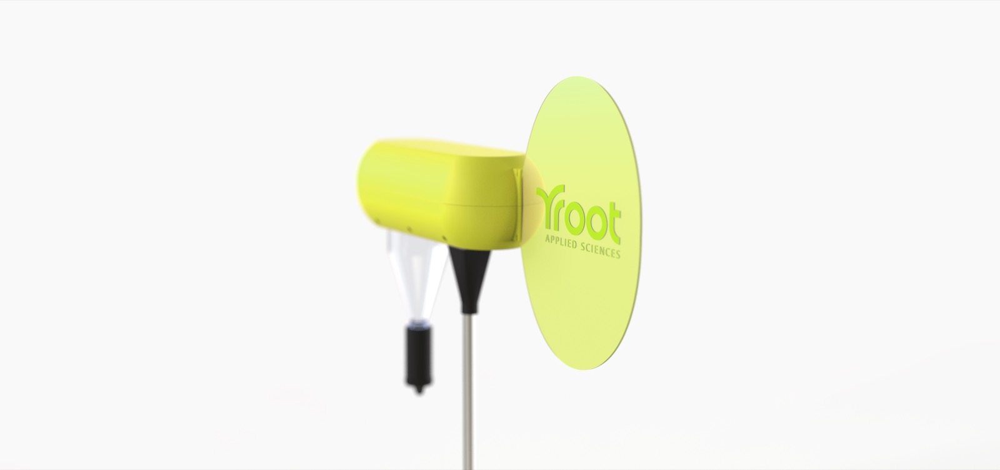
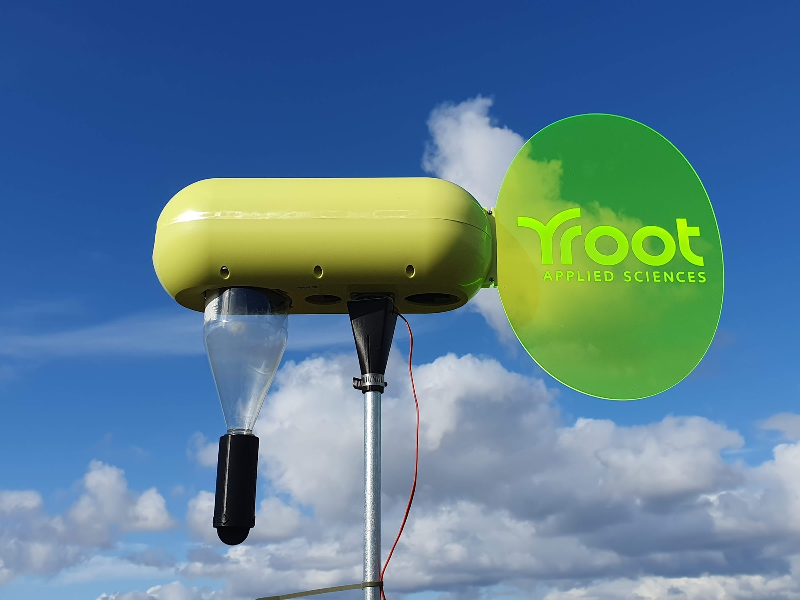
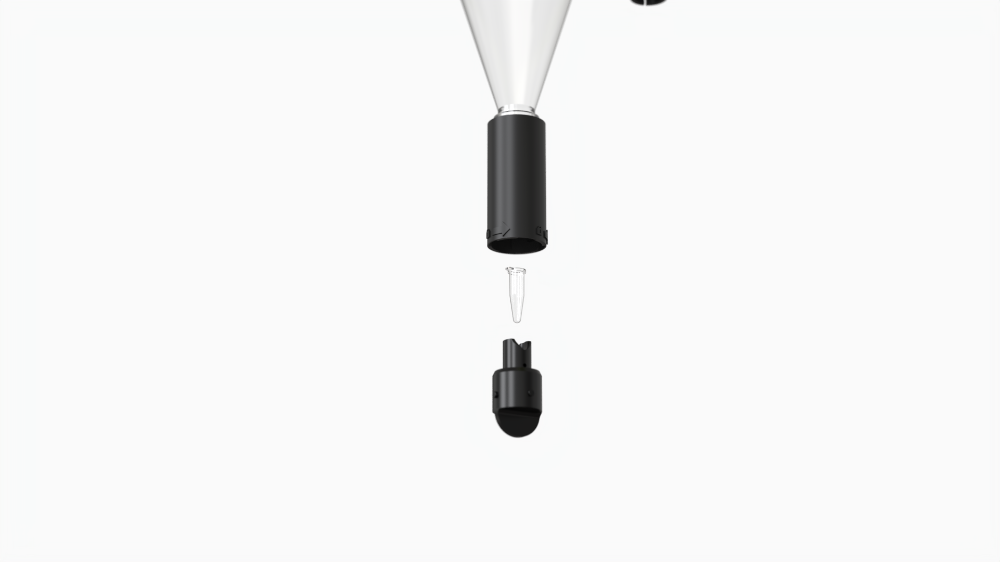

Root Spore Collector
An autonomous air sampler that captures airborne agricultural spores in harsh field environments to help farmers detect crop diseases early..





An autonomous air sampler that captures airborne agricultural spores in harsh field environments to help farmers detect crop diseases early..

